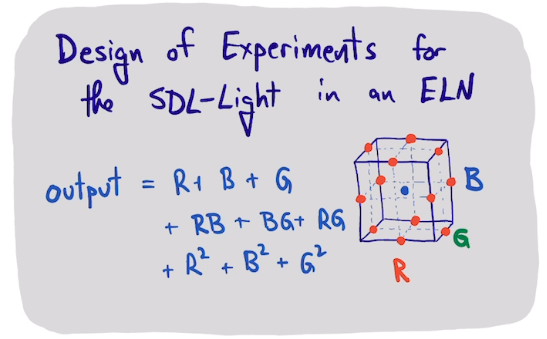

SDL-Light with a design of experiment approach
Table of Contents

There are three "knobs" you can vary in the SDL-Light demo: the R, G and B intensities. There are 8 sensors at different wavelengths that detect the light that is emitted. Here we explore how to find a set of RGB values that will result in a specific reading on the sensors. Specifically we want an RGB setting that results in a reading of 10,000 on the ch620, ch510, and ch470 channels, which are approximately red, green and blue wavelengths.
We previously saw that at least the blue channel is slightly nonlinear in the B setting, and we can assume that is true here too. Rather than randomly sample the RGB space, we will use a design of experiment (DOE) approach.
1. A design of experiment
We will use https://pydoe3.readthedocs.io/en/latest/ to set up our DOE.
We need an experimental design, which is a set of experiments to run. We have three variables here, and we test them at three levels, low, middle and high. The design comes out in "coded" levels. The design creates 15 experiments, with some replicates at the center point.
from pyDOE3 import bbdesign import numpy as np import pandas as pd design = bbdesign(n=3) D = pd.DataFrame(design, columns=['Rc', 'Gc', 'Bc']) D
We have to convert the coded levels to actual values. We use a little knowledge from before where we expect an answer around 50, so we make that the center of the range.
a, b = -1, 1 Rmin, Rmax = 25, 75 Gmin, Gmax = 25, 75 Bmin, Bmax = 25, 75 D['Rint'] = ((D['Rc'] - a) * (Rmax - Rmin) / (b - a) + Rmin).astype(int) D['Gint'] = ((D['Gc'] - a) * (Rmax - Rmin) / (b - a) + Gmin).astype(int) D['Bint'] = ((D['Bc'] - a) * (Rmax - Rmin) / (b - a) + Bmin).astype(int) D
We setup some functions to help drive our experiments. I use HashCache again, with an optional label so we can run these again if we want to.
from self_driving_lab_demo import (get_paho_client, mqtt_observe_sensor_data)
PICO_ID = 'test'
client = get_paho_client(f"sdl-demo/picow/{PICO_ID}/as7341/")
from pycse.hashcache import HashCache
@HashCache
def get_results(R, G, B, label=None):
return mqtt_observe_sensor_data(R, G, B, pico_id=PICO_ID, client=client)
def measure(R, G, B, label=None):
results = get_results(R, G, B, label)
return results['ch620'], results['ch510'], results['ch470']
Test that it works.
print(measure(44, 59, 36))
2. Run the experiments
We should run the experiments in a randomized order. This is important to remove run-order artifacts. For example, suppose the output of the LED is sensitive to temperature, and the LED heats up during the experiment. That would result in a systematic increase in temperature over the runs. By randomizing the run order, this still happens, but the effect is not systematic in the order of the experiments, it is randomized.
input = D[['Rint', 'Gint', 'Bint']].sample(frac=1) input
from tqdm import tqdm
index = []
output = []
for i, RGB in tqdm(input.iterrows()):
result = measure(*RGB, f'jul-3-{i}')
index += [i]
output += [result]
output = pd.DataFrame(output, index=index)
output
We should explore the data a little. First we look at the replicates. Since we shuffled the data, we need to select them.
input.query('Rint==50 & Bint==50 & Gint==50').index
output.loc[input.query('Rint==50 & Bint==50 & Gint==50').index]
3. A simple linear model
Now we need to build a model. A simple model is \(out = in @ pars\), in other words, a simple linear model.
pars, resid, rank, s = np.linalg.lstsq(input, output, rcond=None)
with np.printoptions(precision=1):
print(pars)
The structure of that array supports the largely linear model; the diagonal is large, and the off-diagonals are small.
import matplotlib.pyplot as plt
p = plt.plot(output, input@pars, '.')
p[0].set_color('r')
p[1].set_color('g')
p[2].set_color('b')
plt.legend(['R', 'G', 'B']);
Solve for input that yields (10K, 10K, 10K)
s = np.round([10000, 10000, 10000] @ np.linalg.inv(pars), 0) s
print(measure(*s))
That seems close. We can try a more sophisticated model like a quadratic polynomial.
from sklearn.preprocessing import PolynomialFeatures pf = PolynomialFeatures(degree=2, interaction_only=False, include_bias=False) Xp = pf.fit_transform(input) print(Xp.shape) pars, resid, rank, s = np.linalg.lstsq(Xp, output, rcond=None) pars
Not surprisingly, the fit is better.
p = plt.plot(output, Xp@pars, '.')
p[0].set_color('r')
p[1].set_color('g')
p[2].set_color('b')
plt.legend(['R', 'G', 'B']);
It is a little trickier finding the best solution here. I use a minimize function to find the best solution.
def objective(RGB):
Xp = pf.fit_transform(np.atleast_2d(np.array(RGB)))
out = (Xp @ pars) - (10000, 10000, 10000)
return np.sum(out**2)
print(objective([50, 50, 50]))
from scipy.optimize import minimize
sol = minimize(objective, (50, 50, 50))
print(sol.x.astype(int))
We find a slightly better solution.
print(measure(*sol.x.astype(int)))
We should test this solution a few times.
m = np.array([measure(*sol.x.astype(int), i) for i in range(10)])
_, _, p = plt.hist(m)
c = 'rgb'
for i, group in enumerate(p):
for patch in group:
patch.set_color(c[i])
plt.legend(['R', 'G', 'B']);
np.mean(m, axis=0)
np.std(m, axis=0)
The target we want is just barely at the outside edge of the upper ~95% confidence range.
np.mean(m, axis=0) + 2 * np.std(m, axis=0)
The next step might be to refine the design with a second round of experiments that is more focused around the solution.
Overall, this is a pretty bare-bones DOE approach. One should do a whole analysis of variance (ANOVA), and incorporate sensitivity analysis and uncertainty quantification. We may also need to do additional refining experiments that should make the average result closer to the goal we set.